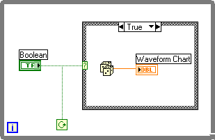

Preventing Code Execution in the First While Loop Iteration
Because a VI checks the conditional terminal at the end of each iteration, the While Loop always executes at least one time.
Complete the following steps to create a While Loop that tests the condition and does not execute any code if the condition is FALSE on the first iteration.
Add a While Loop to the block diagram and drag out a rectangular region.
Add Find
Add a Case structure inside the While Loop and drag out a rectangular region inside the While Loop.
Add Find
Create a Boolean control to control the VI.
Right-click the selector terminal of the Case structure and select Create Control from the shortcut menu to create a Boolean control.
Wire the Boolean control to the conditional terminal of the While Loop. To keep the wiring neat, move the conditional terminal below the Boolean control and create a wire branch from the existing wire segment.
On the block diagram, wire the Random Number (0-1) function to the waveform chart. Make sure that both the function and the chart terminal are inside the case you selected.

Complete the following steps to verify that the While Loop operates correctly and to run the VI.
Examine the front panel. Notice that the default value of the Boolean control is OFF.
Click the Run button a few times to run the VI. Notice that the chart does not display any values. The While Loop executes once, but the Case structure does not execute while the Boolean control is set to OFF.
With the Operating tool, click the Boolean button to ON.
Click the Run button. The While Loop executes continuously, generating random numbers and displaying them on the chart.
 Add
Add  Find
Find